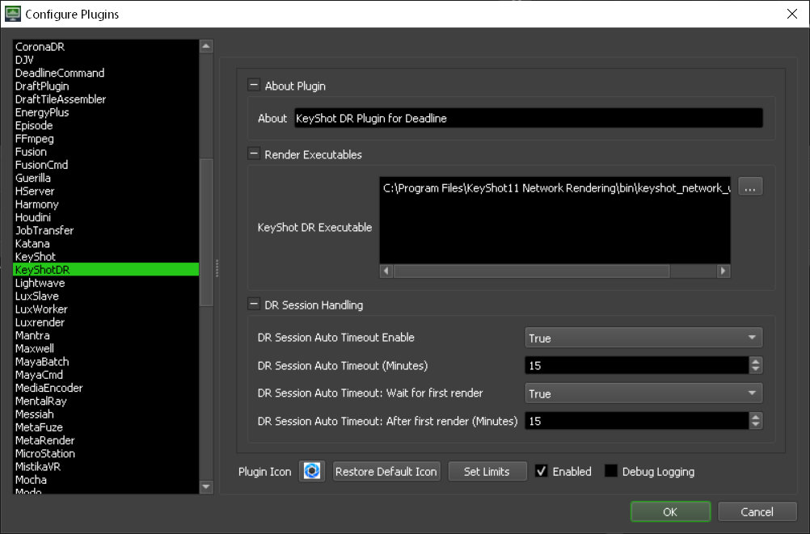

KeyShot Distributed Rendering¶
For information on KeyShot rendering that doesn’t make use of KeyShot’s built-in render manager, navigate to our Keyshot documentation.
Job Submission¶
Submission Options¶
The general Deadline options are explained in the Job Submission documentation. The KeyShot DR specific options are:
Maximum Servers: The maximum number of Deadline Workers to reserve for distributed rendering. The number of tasks created will match this count, reserving that many Workers.
Plug-in Configuration¶
You can configure the KeyShot DR plugin settings from the Monitor. While in power user mode, select Tools -> Configure Plugins and select the KeyShot plugin from the list on the left.
Render Executables
KeyShot Executable: The path to the KeyShot executable file used for rendering. Enter alternative paths on separate lines. Different executable paths can be configured for each version installed on your render nodes.
Distributed Rendering Session Handling
If enabled, these settings control what happens when a Worker that is running KeyShot Worker has entered an IDLE state where it is not currently working on a KeyShot render. We define a session as the time between a KeyShot render completing and the next render starting. There are additional settings to control the behaviour once at least one DR render has taken place on a Worker.
DR Session Auto Timeout Enable: If enabled, when a DR session has successfully completed on a Worker, the task on the Worker will be marked as complete after the DR session auto timeout period in seconds has been reached (Default: False).
DR Session Auto Timeout (Minutes): This is the timeout period (Default: 15 Minutes) when a DR session will timeout and be marked as complete by a Worker. This timeout is only active prior to the first render on the Worker.
DR Session Auto Timeout: Wait for first render: If enabled, it will force at least one render to complete before Auto Timeout becomes active (Default: True).
DR Session Auto Timeout: After first render (Minutes): If enabled, it will force at least one render to complete before Auto Timeout becomes active (Default: True)

{kind=link}
{kind=link}